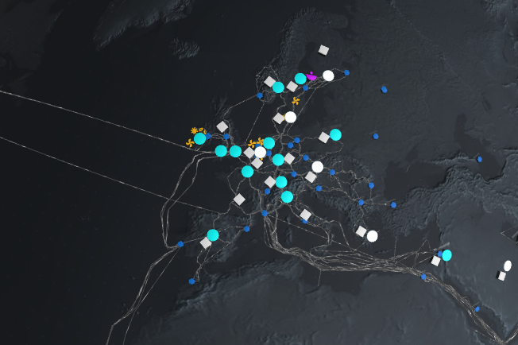
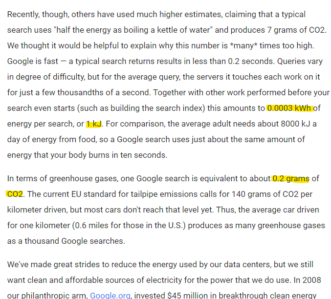

AI, you greedy customer
Agenda
AI, you thirsty customer
AI, you messy customer
AI, you cruel customer
Why do I care
What to do
AI, you thirsty customer

-
Based on their data:
[...] GPT-3 consumes [...] 0.4kWh electricity to generate 100 pages of content (e.g., 0.004kWh per page) -
And data from another paper:
[...] inference energy for BLOOM (a language model with [...]] 176 billion parameters [...]) is about 0.00396kWh per request -
They derive an energy consumption per "Request":
[...] we consider 0.004kWh as the inference energy consumption per request. -
"Request" is then equated with "Inference":
[...] the estimated inference energy of 0.004kWh [...]
Water consumption examples for my conversation with 18 requests
| Region | Usage/Request | ~Usage |
|---|---|---|
| Iowa | 15.2ml | 274ml |
| Ireland | 7.2ml | 130ml |
| Washington | 48.3ml | 869ml |
A quick note on training GPT3:
- Estimated consumption 5 million litres
- Has been retrained multiple times
- Had 100 million users January 2023
- Around 0.05 litres per user per training
Where does all that water go?
The numbers estimate water consumption from Scope 1
and Scope 2 sources.
- Water consumption: The part of withdrawn water that becomes unavailable due to evaporation or pollution
- Scope 1: Water consumption by the data centre itself, mainly cooling
- Scope 2: Water consumption from utilities, mainly power production
Scope 2: Power production
- Power production mainly thermoelectric
- Thermoelectric power plants need water for cooling
- Available data used in column "Electricity Water Intensity"
Scope 1: Direct air cooling
- Cycles outside air for cooling
- Potable water to minimize maintenance
- Above 30° C: Uses water to cool down air
- Est. consumption: 0.2 litres/kWh
Scope 1: Evaporative cooling
- Evaporated water removes heat
- Potable water to minimize maintenance
- 80% water in open cycle evaporates
- the rest concentrates pollutants
- Est. consumption: 1-9 litres/kWh
A note on Scope 3
- Water consumption from manufacture
- "[...] the data [...] remains largely obscure."
- Not added to paper
AI, you messy customer
Revisiting my conversation
- Assuming a german data center
- GPT-3 consumes 0.004kWh energy per request
- ➡️0.03g CO2e for 18 requests⬅️
- GPT 3.5 and 4.0 will undoubtedly consume more energy
➡️would come out to 7.2gram CO2 for 18 requests⬅️
DATEV-GPT
- Running on Azure (Poland)
- 23k requests in April and May
DATEV-GPT
- 23k requests in April and May
- ~430kg CO2e produced
- 2g CO2e per call
- ➡️36g CO2e for 18 requests⬅️
DATEV-GPT
- defined as Scope 3 emissions
- reminder: Scope 3 emissions come from production, transport, ...

DATEV-GPT
- 750g CO2e/kWh (2023)
- or 3g CO2e per request at 0.004kWh
- 5g CO2e/request with Scope 3
- ➡️90g CO2e for 18 requests⬅️

Around 220 page views on Stackoverflow or 450 Google searches
One request equals one hour of light in your living room
Image generation is 3 to 4 orders of magnitude more CO2-intensive than other AI workloads
- Slide 2: green-coding.ai by Green Coding GmbH
- Slide 6: Microsoft sustainability publicity
- Slide 8: Microsoft data centers
- Slide 8: Polands energy mix on electricity maps
- Slide 10: Website carbon measurement of a stackoverflow article
- Slide 10: Googles estimation of energy consumption of one search
- Slide 11: Example of an LED light
- Slide 12: Paper on carbon emissions of different AI workloads
What to do?
What are our options?
Stop.
Get some help.
Choose.
But choose wisely.

Current state of affairs
- Slide 4: Google missies climate goals
- Slide 4: Use of drinking water for cooling in Holland
- Slide 4: Article about sustainability at Microsoft
- Slide 5: Microsoft water consumption trend
- Slide 5: Microsoft water consumption pledge
- Slide 6: Microsoft water consumption 2023
- Slide 6: Microsoft to re-open three mile island, CNN
- Slide 7: Green coding AI by Green Coding GmbH
- Slide 8: Ollama
Why do I care?


Tools switch from
"Make my processor do work"
to
"Start an AI workload"
I find the hidden nature of that disturbing
-
I stopped using AI for extended periods of time
-
I started to look into the resource consumption of AI in my vicinity
-
I started to look at smaller LLMs